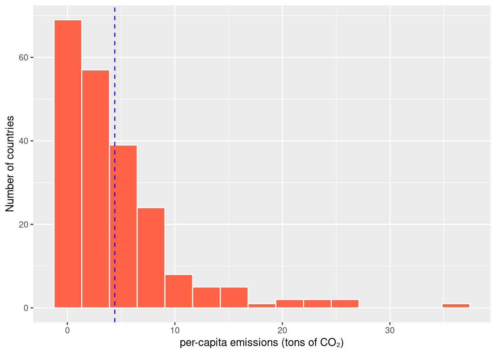
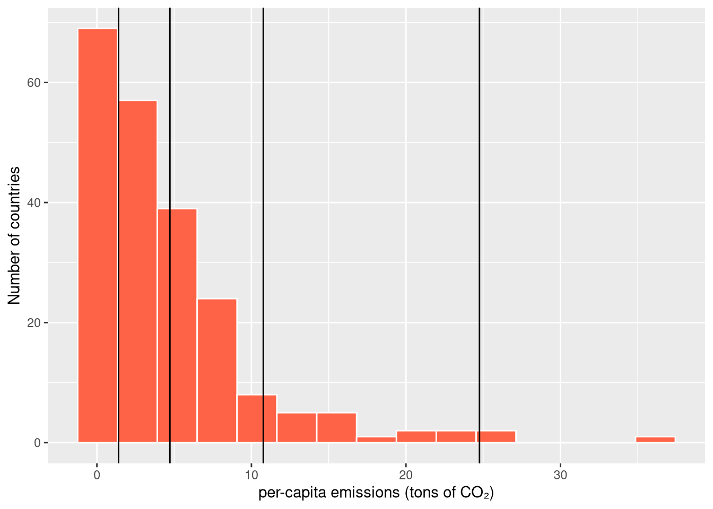

library(tidyverse)
if (!file.exists("data/emissions-raw.parquet")) {
df <- read_csv("https://ourworldindata.org/grapher/co-emissions-per-capita.csv")
arrow::write_parquet(df, "data/emissions-raw.parquet")
}
if (!file.exists("data/population-raw.parquet")) {
df <- read_csv("https://ourworldindata.org/grapher/population-unwpp.csv")
arrow::write_parquet(df, "data/population-raw.parquet")
}
emissions_raw <- arrow::read_parquet("data/emissions-raw.parquet")
population_raw <- arrow::read_parquet("data/population-raw.parquet")Quantitative Methods and Statistics
An applied course using the R programming language
Loading and preparing the dataset
While the gapminder dataset has served us well so far, it is time to mix it up a bit. For this session, we’ll work with CO₂ emissions data from Our World in Data, which contains annual per-capita CO₂ emissions for countries worldwide. In addition to the emissions data, we will also get population data and GDP from the same source.
Quite neatly, we can just directly download the file from their web page with the read_csv() function. However, to be good digital citizens, we’ll download the file and then save it to our computer so that we don’t need to download it again every time we run the script. We can achieve that with an if block, like so:
Let’s rename some variables and filter out non-country entities (such as the European Union or other aggregates) to prepare our data for further use:
emissions <- select(
emissions_raw,
entity = Entity,
code = Code,
year = Year,
emissions = `Annual CO₂ emissions (per capita)`
) |>
# filter out non-country entities
filter(!is.na(code))
# Look at the dataset structure
glimpse(emissions)Rows: 23,206
Columns: 4
$ entity <chr> "Afghanistan", "Afghanistan", "Afghanistan", "Afghanistan", …
$ code <chr> "AFG", "AFG", "AFG", "AFG", "AFG", "AFG", "AFG", "AFG", "AFG…
$ year <dbl> 1949, 1950, 1951, 1952, 1953, 1954, 1955, 1956, 1957, 1958, …
$ emissions <dbl> 0.001992146, 0.010837197, 0.011625335, 0.011467511, 0.013123…We do the same for population:
population <- select(
population_raw,
entity = Entity,
code = Code,
year = Year,
population = `Population - Sex: all - Age: all - Variant: estimates`
) |>
filter(!is.na(code))Finally, these two datasets look like they could be combined into a single data frame with a country per row and columns for population and emissions. We achieve this with a join:
df <- left_join(emissions, population) # joins on all common name columnsJoining with `by = join_by(entity, code, year)`df# A tibble: 23,206 × 5
entity code year emissions population
<chr> <chr> <dbl> <dbl> <dbl>
1 Afghanistan AFG 1949 0.00199 NA
2 Afghanistan AFG 1950 0.0108 7776180
3 Afghanistan AFG 1951 0.0116 7879343
4 Afghanistan AFG 1952 0.0115 7987784
5 Afghanistan AFG 1953 0.0131 8096703
6 Afghanistan AFG 1954 0.0129 8207954
7 Afghanistan AFG 1955 0.0185 8326981
8 Afghanistan AFG 1956 0.0217 8454303
9 Afghanistan AFG 1957 0.0341 8588340
10 Afghanistan AFG 1958 0.0378 8723412
# ℹ 23,196 more rowsExercises
- Load the GDP per capita data from Our World in Data into a data frame.
url <- "https://ourworldindata.org/grapher/gdp-per-capita-worldbank.csv"
# write your code here...- Write the data to the file
"data/gdp-raw.parquet"using thearrowpackage.
- Perform the same changes to variable names that we applied to the emissions data.
- Join all three cleaned datasets into a single data frame. Save the result as a new file called
emi-pop-gdp.parquet.
- Check the availability of the variables across time and countries.
Describing numerical variables
Before diving into numerical summaries, it is usually helpful to visualize the data to understand their distribution. This helps us choose appropriate descriptive statistics and identify distributional peculiarites, such as extreme values.
Histograms
Histograms show the distribution of a continuous variable by dividing it into bins (usually of equal size) and counting observations in each bin. We can plot one using the now familiar ggplot2 machinery:
# load combined dataset
df <- arrow::read_parquet("data/emi-pop-gdp.parquet")
# filter dataset to single year
df2020 <- filter(df, year == 2020)
p <- ggplot(data = df2020, aes(x = emissions)) +
geom_histogram(color = "white", fill = "tomato", bins = 15) +
labs(
x = "per-capita emissions (tons of CO₂)",
y = "Number of countries"
)
p
The histogram tells us that the distribution is heavily right-skewed, with most countries having relatively low per-capita emissions and a few countries exhibiting very high per-capita emissions. Next to being an interesting fact in and of itself (guess which country has the highest per-capita emissions), it is also relevant for the choice of summary statistics.
Exercise
- Create histograms of GDP per capita, population, and emissions, and combine them into a single plot. How would you describe the distributions?
Measures of central tendency
There are different things we might want to say about the distribution shown by the histogram above, for example what its ‘center’ is. There is a variety of approaches to achieve this, each with different properties and trade-offs, making them suitable for different data and scenarios.
The arithmetic mean
The arithmetic mean (or simply “mean”) is the sum of all values divided by the number of observations. Mathematically, we can express it using sum notation (using the greek capital letter Sigma, \(\Sigma\)):
\[ AM(x) = \bar{x} = \frac{1}{n} \sum_{i=1}^n x_i \]
It is probably the most well known and most widely used measure of central tendency, even if not always appropriate. We can call the corresponding R function on our emissions variable by accessing the data frame column with $ :
mean(df2020$emissions)[1] 4.503439We can see that the mean per-capita emissions across countries in 2020 is around 4.48 tons of CO2.
There is however a problem with the mean we just computed: It weighs all countries equally. In this case, it would however be much more appropriate to compute a weighted mean which weighs each country proportionally to its population size. Formally, this means multiplying each observation by its corresponding weight and then dividing by the sum of weights:
\[ AM^w(x) = \frac{1}{\sum_{i=1}^n w_i} \sum_{i=1}^n w_i x_i \]
The unweighted arithmetic ean is just a special case of this where all of the weights are equal to 1. We can compute the weighted mean in R with the weighted.mean() function, using the population column in our data frame as weights:
wm <- weighted.mean(df2020$emissions, df2020$population, na.rm = TRUE)
wm[1] 4.406433We can see that the weighted mean is a bit smaller, indicating that some of the high-emissions countries received lower weights (due to smaller populations) than some of the low-emissions countries. Here, we also had to specify na.rm = TRUE to remove observations with missing values (NAs) in our population column before computing the mean.
We can also add a line to our histogram plot to indicate our mean (or any measure of central tendency):
p + geom_vline(xintercept = wm, color = "blue", linetype = "dashed")
The geometric mean
When our data represents ratios or rates of change, the arithmetic mean is no longer appropriate. We should instead use the geometric mean which correctly handles the multiplicative logic inherent to the data.
We might think about, e.g., the average growth rate of per-capita emissions in Germany over the last 20 years. We can obtain this growth series as follows, using the lag() helper function:
growth_de <- emissions |>
filter(entity == "Germany" &
year >= 2000 &
year <= 2020) |>
arrange(year) |>
mutate(growth_rate = emissions / lag(emissions))In analogy to the additive nature of the arithmetic mean (we’re adding up \(n\) things for which we account by dividing by \(n\)), the geometric mean is defined as the \(n\)’th root of the product of values:
\[GM(x) = \sqrt[n]{x_1 \times x_2 \times ... \times x_n} = \left(\prod_{i=1}^n x_i \right)^\frac{1}{n}\]
There is no built-in function in R to compute the geometric mean, but it turns out that the geometric mean is just the exponential of the mean of the logs of the series, i.e. \[GM(x) = \exp \left( \frac{1}{n} \sum_{i=1}^n \log(x_i) \right)\]
which we can compute easily ourselves with a single line of R:
exp(mean(log(growth_de$growth_rate), na.rm = TRUE))[1] 0.9826139The result is around 0.98, which tells us that, on average, the per-capita emissions in Germany have been decreasing by about 2% a year over the last 20 years.
The median
The median is the middle value when observations are ordered from smallest to largest. If there is an even number of observations, there is no middle and the median is instead the mean of the two adjacent middle observations.
Because it does not care about the actual values in the tails (the ends) of a distribution, the median is less sensitive to outliers than the mean. We can compute it with the median() function:
median(df2020$emissions, na.rm = TRUE)[1] 2.960939At 2.97, the median is quite a bit lower than the mean. This is to be expected given the shape of our distribution: In right-skewed distributions like this one, the mean is always larger than the median because it’s pulled towards the extreme values.
We can add lines for both the median and the arithmetic mean to our plot to see how they compare:
p + geom_vline(xintercept = median(df2020$emissions), linetype = "dashed") +
geom_vline(xintercept = mean(df2020$emissions))
As for the mean, there is a weighted version of the median, which we however need to pull from the ggstats package (install it before you load it):
library(ggstats)
wmed <- weighted.median(df2020$emissions, df2020$population, na.rm = TRUE)
wmed[1] 4.457317Quantiles
Quantiles are values which divide the sorted data into equally-sized groups. The median is just one specific quantile, namely the 0.5 quantile (or equivalently the 50th percentile), which divides the data into two groups, with half the data below the median value and half above it.
But we can just as well report other quantiles, such as the 0.25 quantile (a quarter of the data below it , three quarters above) or the 0.99 quantile (just one percent of the data above it). Here is how to compute quantiles in R, with the probs argument specifying the quantiles to return:
qs <- quantile(df2020$emissions, probs = c(0.33, 0.66, 0.9, 0.99), na.rm = TRUE)We could again add them to our plot:
p + geom_vline(xintercept = qs)
Looking at the plot, we see that 90% of countries have per-capita emissions of around 10t or less.
If we want a quick summary of a numerical variable and mean, we can use the summary() function, which gives us the variables minimum and maximum, the variables mean and the 25%, 50% (i.e. the median), and 75% quantiles (called the `quartiles). It also reports the number of missing values.
Exercises
- Filter the dataset to the 2000 to 2020 period and keep only rows for country entities (which have entity codes of length 3).
- Calculate the (population-weighted) mean and median GDP per capita. Which is larger and why?
- Install and load the
countrycodepackage. Use it to create a newregioncolumn in your dataframe. You can use it like so:
countrycode::countrycode(
c("DEU", "USA"),
origin = "iso3c",
destination = "region")[1] "Europe & Central Asia" "North America" - Compute weighted means and medians in each region, for the years 2000 and 2020. Plot the result.
- Add new columns to your data frame with the growth rate of total regional GDP and total regional emissions. Plot the regional development of GDP and emissions for East Asia, Europe, and North America.
- Compute the average growth rates for emissions and gdp since the year 2000 for each region.
Measures of dispersion
While measures of central tendency tell us something about the ‘center’ of the distribution, measures of dispersion try to capture how ‘spread out’ (or concentrated) the data are. Just as for measures of central tendencies, there are many ways to measure dispersion, each again with their own characteristics and trade-offs.
The range
The simplest measure of dispersion is the range, which is just the difference between the maximum and minimum values. In R, the range() function gives us the minimum and maximum values of a variable, the difference of which we can get with diff():
df2020$emissions |> range() |> diff()[1] 36.1006The range is useful to understand the empirical limits of the studied variable but of course very sensitive to outliers and probably not representative of the typical data so it is not all that useful as a dispersion measure.
The interquartile range (IQR)
The IQR is the difference between the 75th and 25th percentiles, representing the spread of the middle 50% of the data. As such it is much more robust to outliers than the range. You can compute it with the IQR() function:
IQR(df2020$emissions)[1] 4.566232Variance and standard deviation
The variance measures the average squared deviation from the data mean: \[ s^2 = \frac{1}{n} \sum_{i=1}^n (x_i - \bar{x})^2 \]
Squaring differences from the mean make it so that positive and negative deviations don’t cancel each other out, but have the consequence that the result is somewhat awkward to interpret. The standard deviation addresses this by taking the square root of the variance so that the result is in the same units as the original data again:
\[ s = \sqrt{s^2} \]
You can easily compute both in R:
var(df2020$emissions)[1] 28.46136sd(df2020$emissions)[1] 5.334919Variance and standard deviation have nice theoretical properties and analogies in probability theory, making them the most widely used dispersion measures for numerical data. Just as for the mean, however, they are sensitive to outliers and can thus give misleading or surprising results.
Coefficient of variation
The coefficient of variation (CV) is the ratio of standard deviation to the mean. It is useful for comparing variability across different datasets or across groups. We can compute it using the functions we already know:
sd(df2020$emissions) / mean(df2020$emissions)[1] 1.184632By itself, this is not particularly interesting. But we could use it to compare the spread of emissions across world regions, which have very different means.
Based on this, we can use our data wrangling techniques to split the data and compute our summary for the two groups:
library(countrycode)
df2020 |> mutate(
region = countrycode(code, origin = "iso3c", destination = "region")
) |>
summarize(
mean = mean(emissions),
sd = sd(emissions),
vc = sd / mean,
.by = region
)Warning: There was 1 warning in `mutate()`.
ℹ In argument: `region = countrycode(code, origin = "iso3c", destination =
"region")`.
Caused by warning:
! Some values were not matched unambiguously: OWID_KOS, OWID_WRL, SHN, WLF# A tibble: 8 × 4
region mean sd vc
<chr> <dbl> <dbl> <dbl>
1 South Asia 1.23 0.988 0.801
2 Europe & Central Asia 5.82 2.99 0.515
3 Middle East & North Africa 8.97 10.3 1.15
4 Sub-Saharan Africa 0.846 1.37 1.62
5 Latin America & Caribbean 4.17 4.40 1.05
6 East Asia & Pacific 5.33 5.68 1.07
7 North America 11.2 3.33 0.296
8 <NA> 3.45 1.39 0.404Based on this, we can see that while the standard deviation is much larger in Europe in absolute terms, relative to the mean Europe is much more homogeneous in its per-capita emissions than Africa.
Median absolute deviation (MAD)
Similarly to the median being an alternative to the mean that is more robust against outliers, the median absolute deviation (MAD) is a robust dispersion measure, computed as the median of the absolute differences to the median. We could compute it ourselves but R has a built-in function:
mad(df2020$emissions)[1] 3.255291As before, we see that MAD is lower compared to the standard deviation because it is less sensitive to large outliers.
Exercises
- Identify countries that are outliers in terms of per-capita emissions (you can use the IQR method: values beyond Q1 - 1.5×IQR or Q3 + 1.5×IQR). What are your theories about why they are outliers?
- Investigate the hypothesis that economic development in Europe has been more convergent (or at least less divergent) due to the EU’s cohesion policies than other world regions (pick one comparison region).
Describing categorical variables
For categorical variables, we cannot compute means or standard deviations due to the non-numerical nature of the data, but we can count frequencies and examine proportions.
Let’s create a categorical variable from our dataset by grouping countries into emission level categories:
df2020_cat <- df2020 |>mutate(
emission_level = case_when(
emissions < 2 ~ "Low",
emissions < 8 ~ "Medium",
emissions >= 8 ~ "High",
TRUE ~ NA
),
emission_level = factor(
emission_level,
levels = c("Low", "Medium", "High"),
ordered = TRUE
)
)Bar plots and frequency tables
The most basic description of categorical data is a frequency table, showing how many observations fall into each category:
df2020_cat |> count(emission_level)# A tibble: 3 × 2
emission_level n
<ord> <int>
1 Low 88
2 Medium 95
3 High 32We can also get proportions instead of raw counts by dividing our counts by the sum of counts across all categories:
props <- df2020_cat |>
count(emission_level) |>
mutate(proportion = n / sum(n))
props# A tibble: 3 × 3
emission_level n proportion
<ord> <int> <dbl>
1 Low 88 0.409
2 Medium 95 0.442
3 High 32 0.149About 40% of countries fall into the low emissions category, while only about 14% are in the high category.
We can easily visualize a frequency table as a bar chart as an equivalent to the histogram for quantitative variables:
ggplot(df2020_cat, aes(x = emission_level)) +
geom_bar(fill = "tomato") +
labs(x = "Emission Level", y = "Number of Countries")
Categorical measures of central tendency
Median for ordinal data
When we have ordinal categorical data (categories with a meaningful order), we can use the median as a measure of central tendency because it only relies on the order of values but not the actual values themselves (in R, we still need to convert to a numerical representation, though):
median(as.numeric(df2020_cat$emission_level))[1] 2Maybe unsurprisingly giving the above bar chart, the median category is ‘Medium’.
Mode for nominal data
For nominal (unorderded categorical) data, we cannot use the median any more. The most useful representation of the ‘center’ is in this case just the most frequently occurring category, called the mode. While R doesn’t have a built-in mode function, it is just the top value of our sorted counts:
df2020_cat |> count(emission_level, sort = TRUE) |> head(1)# A tibble: 1 × 2
emission_level n
<ord> <int>
1 Medium 95The mode of our emission level variable is again “Medium”, although in this case it would be more useful to report the median category anyways, as discussed above.
Categorical measures of dispersion
Entropy
For measuring dispersion in categorical data, we have to measure how concentrated the distribution is, with maximum concentration achieved when all observations fall into a single group. One measure which achieves this is entropy (having origins in physics and information theory), which reaches its maximum when all categories are equally likely, and its minimum when all observations fall into a single category. The entropy is mathematically defined as minus the sum of the probability-weighted log of each probability/proportion, which we can normalize to the (0, 1) range by dividing by the log of the number of categories:
\[ H = -\frac{1}{\log(k)} \sum_{i=1}^k p_i \log(p_i) \]
where \(p_i\) is the proportion of category \(i\). There is no built in function in base R but we can easily compute it ourselves:
-sum(props$proportion * log(props$proportion)) / log(nrow(props))[1] 0.9193826The resulting value is 0.92, telling us that the distribution is relatively but not quite perfectly even. A more interesting finding would probably come from comparing against a reference value (e.g., compare the spread of today’s distribution with 20 years ago).
Exercises
- Define three categories: “Low income” (< $5,000), “Middle income” ($5,000 - $20,000), and “High income” (≥ $20,000). Create a corresponding categorical variable in your dataset.
- Create a frequency table showing the number and proportion of countries in each income category.
- Create a bar chart of the income categories.
- Compute the median and entropy for income categories for each of the world regions.